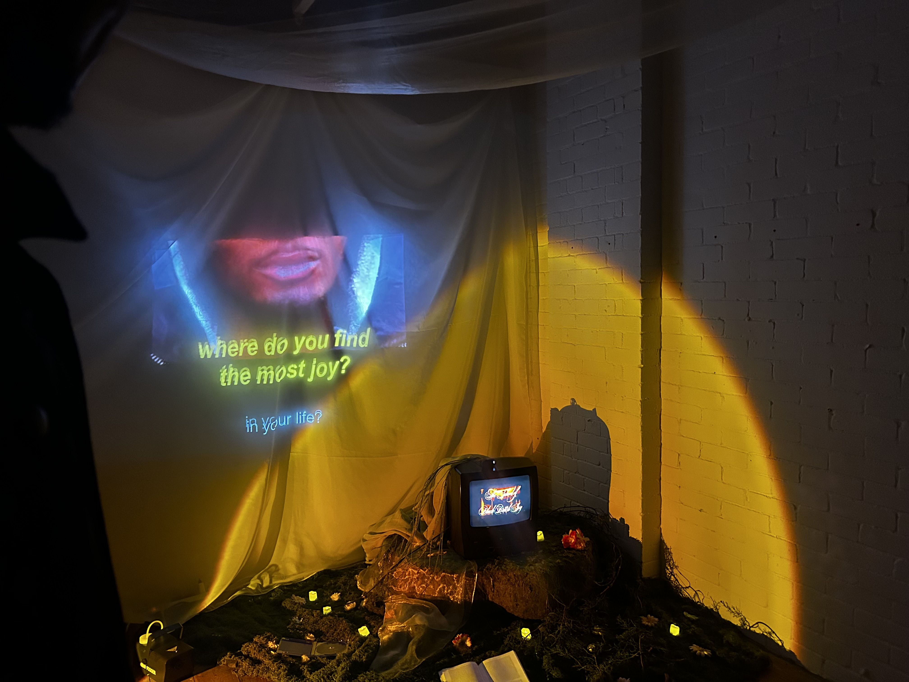

Projects

The Black British School Of Joy
Lil Simz Free Visualiser

Tia Tshabola is a London-based creative technologist, engineer, and VJ crafting high-impact immersive experiences at the intersection of sound, culture, and technology.
Working across visual design, creative direction, and live performance, she collaborates with artists, studios, and cultural institutions to create work that centers joy, reflection, and culture. As the owner of New Vision Studio, Tia develops commissioned and self-initiated projects spanning concert visuals, interactive installations, physical prototyping, and experimental gallery experiences.
Currently studying at UAL’s Creative Computing Institute, her work explores how technology can be a tool for cultural expression—building new visual narratives that reflect the future of Black British creativity.